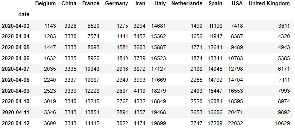

动态条形图或柱形图¶
在python中动态条形图或柱形图主要使用matplotlib或plotly来绘制；不过，有大神将绘制过程进行了封装：借助bar_chart_race就可以简单、轻松的绘制。要使用此函数，需要安装；不过使用pip install bar_chart_race命令进行安装的只是0.1版本，要使用更多功能，需要在作者的GIthub上下载源代码，进行安装0.2版本。
安装方式：解压Github下载的源代码，找到setup.py所在位置，在cmd里定位到该文件夹，使用python setup.py install进行安装。
为了将动画保存到磁盘，请使用您要保存的文件名作为第二个参数。您需要先安装ffmpeg才能保存动画。安装后，您将能够将动画保存为多种格式（mp4，m4v，mov等）。要将动画另存为gif，请安装ImageMagick。
如果您在Jupyter Notebook中工作，请保留filename as None，它将自动嵌入到Jupyter Notebook中。
函数简介¶
def bar_chart_race(
df, # pandas DataFrame
filename=None, # None或str，默认None
orientation='h', # 'h'或'v'，默认'h'
sort='desc',# desc'或'asc'，默认'desc'
n_bars=None, # int，默认None，最大条数
fixed_order=False, # ool或list，默认False，顺序
fixed_max=False, # bool，默认False，是否固定包含这些值的轴的最大值。
steps_per_period=10, # int，默认10，The number of steps to go from one time period to the next.
period_length=500, # int, default 500，Number of milliseconds to animate each period (row)
interpolate_period=False,# bool, default False
label_bars=True,# bool, default True，是否在右侧标记值
bar_size=0.95, # float, default .95
period_label=True,# bool or dict, default True
period_fmt=None,# str, default None
period_summary_func=None,# function, default None
perpendicular_bar_func=None, # function or str, default None
figsize=(6, 3.5), # two-item tuple of numbers, default (6, 3.5)
cmap='dark24', # str, matplotlib colormap instance, or list of colors, default 'dark24'
title=None, # str, default None，标题
title_size=None, # number or str, default plt.rcParams['axes.titlesize'] ，标题字体大小
bar_label_size=7, # number or str, default 7，标签大小
tick_label_size=7, # number or str, default 7，刻度大小
shared_fontdict=None,# dict, default None，字体共享设置
scale='linear', # 'linear' or 'log', default 'linear'
writer=None, # str or matplotlib Writer instance
fig=None, # matplotlib Figure, default None
dpi=144,# int, default 144
bar_kwargs=None, # dict, default
filter_column_colors=False) # bool, default False
# 导入库
import bar_chart_race as bcr
import pandas as pd
import warnings
warnings.filterwarnings('ignore')# 忽略错误输出
数据说明¶
bar_chart_race使用的数据必须是处理后的宽数据；其中每一行代表一个时间段，每列包含该类别的条形值，（可选）使用索引标记每个时间段，索引可以是任何类型。
可使用prepare_wide_data()或prepare_long_data()两个函数将数据转换成正确的格式；也可以运用melt()或pivot()函数将数据处理成正确的格式。
本文数据使用作者GIThub上的共享数据，下载源代码时，里面附带。由于通过bcr.load_dataset()时遇到问题，所以从本地读取数据。
data = pd.read_csv('covid19_tutorial.csv',
parse_dates=['date'], # 将'date'解析为日期
index_col='date' # 将'date'作为索引
)
data

绘图¶
# 要传递给period_summary_func的函数
def summary(values, ranks):
total_deaths = int(round(values.sum(), -2))
s = f'Total Deaths - {total_deaths:,.0f}'
return {'x': .99, 'y': .05, 's': s, 'ha': 'right', 'size': 8}
# 绘图
bcr.bar_chart_race(data,# 数据
filename='covid.gif',# 保存为.gif
steps_per_period=30, # 增大平滑度
period_length=1000, # 增大时间量
period_label={'x': .99, 'y': .1, 'ha': 'right', 'color': 'black'},# 日期标签
title='各国COVID-19死亡人数',
shared_fontdict={'family': 'LiSu', 'weight': 'bold'},# 共享字体
period_summary_func=summary, # 添加死亡总人数
)

- 更多功能介绍可查阅官方文档。